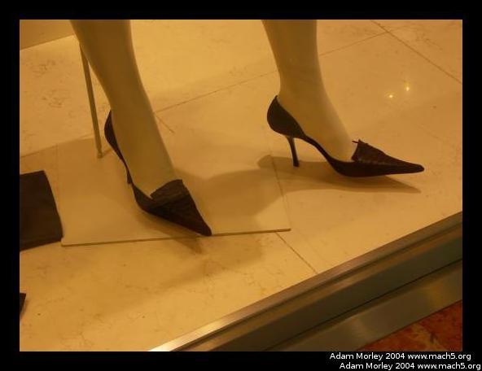
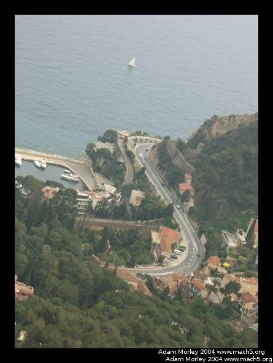

During my spring break, I took a little trip to the south of France. My parents (who visited me in Denmark) were exploring the French Riviera (their first trip to Europe) after seeing Paris. They had a fancy hotel room that cost ungodly sums of money (but that they were paying very little for, my mother is quite good at such things) so I couldn't resist the opportunity to see the sights.
Arrival on the coast, after a little drive from the Nice airport, including one incident with a moving fence.
A cute little car.
It really does look exactly like in movies, and pictures. It was so odd to see it in real life. Typical French driving abounded --- meaning you would often see people drifting across the center line at corners hoping to pass on the next straight. I made a low-quality movie of the driving. Turn the sound down, as it's ungodly scratchy.
One of my many sightings of pointy-toed shoes in the EU. They became all the rage in 2003 in Europe, and finally came to the USA big-time in about 2005.
The famous Monte-Carlo Casino in Monaco. Monaco is over-the-top, where even a sandwich can be overpriced.
Inside the mall in Monaco.
Looking down from the high corniche.
Houses on hills, from the high corniche.
SmartCar!
We had lunch on top of a beach hotel in Nice. The view was amazing, and the food was quite tasty.
Buildings on the way to Cannes.

Nearing Cannes.
Muy famoso.
In front of the building for the Cannes film festival.

The Cannes film festival is held here.
The beach in Cannes. Course sand.
Froid.
From Nice/the Riviera, I went to Aix-en-Provence by train via Marseille. My friend Christina was studying in Aix, and having a tremendously good time. She lived in an apartment with her roomate, Jane. Jane is hilarious.
The view from her window.
We headed to the market to pick up some food.
At the market, the Frenchmen were out in force.
Plus one thirsty bird. The French, smartly, make many of their water features potable.
And us.
Streets in Aix.
The bookstore. I haven't seen a line like that anywhere in the USA except in Boulder, CO.
Crêpes à GoGo.

The main street in Aix.
Aix has many cafes.
Adam can be reached at adam dot morley at gmail dot com